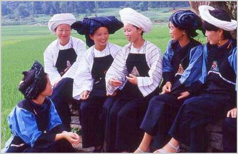

民歌是劳动人民创造的成果，是人民群众真实生活与情感的写照。我国是一个历史悠久、民族众多的国家。各地区、各民族的歌曲浩如烟海，其内容形式不仅丰富多彩，而且具有浓郁的民族风格和鲜明的地方特色。早在解放时期，在中国共产党的领导下，以延安为中心的各革命根据地，就开始用新民歌作为宣传和战斗的武器。如：《解放区的天》《军民大生产》《二月里来》等等。这一时期的新民歌和以往的反映人民穷苦生活的民歌不同，它是各根据地人民火热战斗生活的写照，它主要具有革命性和战斗性。

而今天我们所说的“新民歌”是站在新世纪的起点上，回首过去、展望未来、与时俱进提出的。它的内涵是：强调“原始性”、“流行性”、“通俗性”、“世界性”和“多样性”。
一、原始性
所谓“原始性”是指音乐语言的元素。即：人们在劳动中和社会生活中创作的，在群众和民间艺人中广泛传唱的，反映人们喜怒哀乐的原汁原味的民歌和音乐。而我们在创作时，采用了这些音乐中的元素作为动机，这就是今天新民歌所说的“原始性”。因为原始性音乐最纯朴、最自然、也最受人们的喜爱，所以很多音乐家都到基层去体验生活，到边远的山区和少数民族地区采风，为的就是寻找和挖掘原始性的音乐元素。著名的作曲家雷振邦先生创作了很多优秀的少数民族歌曲，如《刘三姐》、《阿诗玛》、《五朵金花》、《冰山上的来客》等电影插曲。为了写这些电影歌曲，他在云南、广西等地住过很长一段时间,掌握了大量的少数民族音乐元素,他的那首《蝴蝶泉边》中就有云南白族民歌《洱源西山白族对唱》的一些音乐元素。原始性音乐最有特点，最具有民族性。因此，中国的民族音乐及民族歌曲的发展在于寻根溯源，在于寻找原始性音乐元素。
二、流行性
我们强调的“流行性”是指：旋律精炼、易于上口、既好听又有特点。下面来看看在中国流传很久的一些四句体民歌，如《四季歌》、《赶牲灵》、《在那遥远的地方》、《小河淌水》等等。这些民歌体裁简单、题材精炼、艺术性强，听后使人印象深刻。像这样的既有艺术性，又具有流行性的歌曲是中国的经典作品，它应该在全世界流传。因此，我们这代艺术家有义务使中国的民歌具有时代感，向全世界推广传播中国的民族音乐、民族歌曲。我想，今天我们创作的新民歌，就应该向这些四句体民歌学习。使之既具有时代感，又具有流行性，使不同国家不同阶层的听众都能喜欢。这就是我们所说的流行性。
三、通俗性
通俗性是针对歌词写作而言的：即口语化了的写意。写意是中国的一种绘画技巧，它要求用简练概括的笔墨，着重描绘物象的意态神韵。大家知道，一首好歌词一定是一首好诗，反之则不一定是一首好歌词。那我想原因就在于：口语化了的写意。因为诗在意境上可以不口语化，而歌词无论何种意境都需要口语化，才能更易于被人们接受。因为音乐是一种随时间流动的艺术，没有时间再向听众解释词意。
我们强调口语化了的写意，是为了防止那些大白话，像白开水一样没有味道。另外，也为了防止空洞的口号化。因此，作为新民歌这一概念，歌词适宜从小点着意，短小精炼，口语化中见意境，质朴中见空灵，题材和体裁可不拘一格，丰富多彩。时下已出现了一些新民歌，如：汤灿的《幸福万年长》、张燕的《月亮女儿》、李琼的《山路十八弯》、柏文的《西部春色》等等。
四、世界性
对于音乐制作方面，应当遵循“世界性”。即把世界各地各民族的原始性音乐和一些特殊乐器的音色，利用高科技手段采集起来。根据不同作品风格的需要，运用一些现代音乐制作手法，经过制作人的编配，使作品既具有民族精神气质，又具有时代精神气质。如：歌手朱哲琴的《阿姐鼓》，即为“世界性”音乐制作。另外，目前以浮克、陈彤等为代表的一批作曲家、音乐制作人，他们的作品大部分都是按世界音乐的方式制作的。像这样世界性的音乐能够受到不同国籍，不同民族，不同身份听众的喜爱，这也是我们民族歌曲走向世界的必要条件。
五、多样性
我们所说的“多样性”是指歌手的演唱方面。即各种具有浓郁民族特色的现代唱法，都属新民歌唱法。新民歌唱法要求以作品风格定唱法。即作品决定唱法，而不是无论什么作品只用一种声音和一种方法。这需要歌手具有很强的声音调整能力。当然也有歌手只去演唱适合自己声线的作品，因为一个歌手不可能适合演唱所有风格的作品。目前，我国民族唱法的歌手有趋同化的现象，原因我想是这样：一是学院派的原因，为了方法的正确而扼杀了歌手的个性；二是作品风格的趋同化，使得歌手演唱上没有风格而成中性化。另外，就是一些晚会歌曲，晚会唱法。这种唱法是最严重的导致演唱趋同化的原因。是各种晚会使这种唱法形成一个潮流。我认为这种潮流带来的是一种灾难——民族声乐的灾难。好在目前已有希望，已有很多人在关注这方面的问题。2002年中央电视台青年歌手大赛，就是以风格特色和完成作品的完整性等条件为打分标准。像歌手索朗旺姆、徐洋、柏文等，她们的演唱都各有特色，唱法与作品风格结合得很好，体现了多样性。因此，评委们都给出了高分，这也是观众最希望看到的。